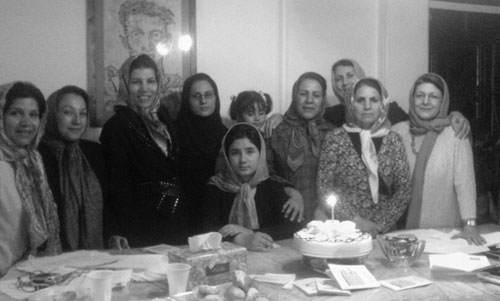

پذيرش > مقالات > تاریخ شفاهی > آیا خواسته های کمپین به نفع زنان کارگر است؟
 مطالبات کمپین و زنان کارگر مطالبات کمپین و زنان کارگر

 آیا خواسته های کمپین به نفع زنان کارگر است؟ آیا خواسته های کمپین به نفع زنان کارگر است؟
16 اردیبهشت 1387 - گفتگوی جمعی - نسخه قابل چاپ
همزمان با فرا رسیدن روز کارگر تعدادی از اعضاء فعال کمپین یک میلیون امضا با تعدادی از زنان کارگر عضو کمپین به بحث و گفتگو نشستند. این گفتگو پیرامون کمپین یک میلیون امضا و خواسته های زنان کارگر انجام گرفت.
اعضای حاضر در این گفتگو :
اکرم- شاغل در بخش خدماتی 58 ساله .
راحله: شاغل در بخش کارگری.
فرخنده : فعال امور زنان و کودکان 45 ساله .
شهلا انتصاری :فعال اجتماعی ،فعال امور زنان و کارگری 48 ساله .
منصوره : کارگر خیاط 35 ساله .
مریم زندی : بازنشسته گروه صنعتی کفش ملی و فعال زنان 47 ساله .
رضوان مقدم : فعال امور زنان 50 ساله .
خدیجه مقدم : فعال امورزنان وتعاونی های زنان 56 ساله.
فرزانه : کارگر خیاط 30 ساله .
وجیهه: تعاونگر 48 ساله.
زهره : خیاط ماهر47 ساله .
در آغاز جلسه هریک از حاضران از نحوه آشنایی شان با کمپین سخن گفتند:

اکرم ازدوستانش درمورد فعالیت های زنان شنیده و فرم درخواست تغییر قوانین را امضا کرده است.
راحله از طریق دوستانش در جریان قرارگرفته، سپس فرم را امضا کرده و اکنون از اعضای فعال در جمع اوری امضاست.
فرخنده تا حدودی در جریان کمپین قرارگرفته است اما هنوز فرم آن را امضا نکرده است و بیشتر تمایل دارد در جلسات کمپین شرکت کند.
منصوره با شرکت در کارگاه های آموزشی کمپین با این حرکت آشنا شده و اکنون امضا جمع می کند
مریم طریق فعالان زنان و دوستانش در جریان فعالیت کمپین قرار گرفته است اکنون هم در حوزه حقوق زنان فعالیت می کند.
زهره از طریق یکی از دوستانش با کمپین آشنا شده و بیانیه کمپین را امضا کرده است.
فرزانهاز طریق مدیر خیاطخانه اش آشنا شده و بیانیه را نیز امضا کرده است.
گفتگو ی جمعی حاضران با طرح سئوالی از سوی یکی از افراد فعال در کمپین آغاز شد و ادامه یافت :
رضوان : آیا طرح کمپین، خواسته های زنان کارگر را در بر دارد؟
اکرم : به نظر من خواسته های زن کارگر با سایر زنان مشترک است.بحث نابرابری حقوقی بحث تمام زنان صرفنظر از جایگاهشان است. مثلا در موادی مثل ارث، دیه یا چند همسری فرقی میان زن کارگر با سایر زنان وجود ندارد.او هم مثل سایرین در معرض همین نابرابریست.
راحله: فرقی نمی کند زن، زن است. همه زنان از تغییر قوانین منتفع می شوند. شاید بشود گفت زن کارگر تضادهای بیشتری را می بیند و ازتغییر قوانین بیشتر نفع می برد. اما در مواقعی می بینیم که یا آگاهی به نسبت کمتری دارند و یا بسیاری از نابرابری ها را ناشی از قوانین نابرابر نمی دانند.
فرخنده: من هم تفاوت چندانی در خواسته ها نمی بینم ،بسیاری از زنان خواسته های مشترکی دارند.اما قانون در مورد آن ها نارسایی دارد. من به واسطه فعالیت های خودم در کانون اصلاح و تربیت با دختران و زنان بسیاری برخورد داشته ام و دیده ام که بسیاری از زنان به واسطه خشونتی که بعضی مردان در خانه دارند اختیار کردن همسر دیگری برای مرد را خلاصی از دست او می دانند، می بینید، نا آگاهی یا خلا قانونی گاهی توسط خود زنان نیز درونی می شود و برای آن توجیهاتی می آورند. من چند وقت پیش مددجویی داشتم که پانزده سالش بود و سال دوم راهنمایی بود. او برای بار دوم بود که به کانون اصلاح و تربیت آمده بود، وقتی با او صحبت می کردم و از او پرسیدم حالا که پدرت تو را اذیت می کند چرا با مادرت زندگی نمی کنی ؟ گفت: زندگی یعنی زندان." ن" یعنی نداری،" د" یعنی دربه دری ، "گ "یعنی گدایی و "ی" یعنی یتیمی . و می گفت مادر من از دست پدرم خودکشی کرد و ای کاش به من هم همان قرص را می داد و با هم می مردیم ! می گفت پدر من نه می گذارد من تحصیل کنم نه با دوستانم رابطه داشته باشم و نه زندگی راحتی داشته باشم. وقتی از او سوال کردم اگر مادرت زنده بود اجازه می داد پدرت زن دومی بگیرد گفت: آره . مادرم اجازه می داد چون مادرم راحت می شد. ببینید خوب قوانین نارسایی دارند در واقع این دختران وقتی پایشان به چنین جاهایی کشیده می شود نیاز بسیاری به آموزش دارند.
رضوان : حالا که صحبت از همسر دوم شد، به نظر شما چرا برخی از زنان می پذیرند که زن دوم شوند و یا شوهرشان زن دوم اختیار کند.
منصوره : به نظر من بسیاری از این زنان نیاز به سرپناه دارند، بسیاری از آنان با مشکلات مالی روبرو هستند و برایشان اصلا آینده مهم نیست مسئله اصلی نیاز مالی هم اکنون است که باعث پذیرش این نقش یعنی زن دومی مردی می شود.
رضوان : من هم به نوعی با حرف شما موافقم، مثلا اگر زنی بداند که به نوعی پشتوانه مالی دارد، ازدواجش برای فرار از مضیقه مالی نیست. اگر به او اجازه کار داده شود، اگر خانواده او را محدود نکند یا حتی در نهایت بداند از ارث برابری برخوردار است، تنها راه تامین نیاز مالی خود را در ازدواج نمی بیند.
شهلا : به همین دلیل است که من فکر می کنم که در کمپین به حقوق تمام زن ها توجه شده صرفنظر از جایگاه آنان. شاید حتی خواسته های کمپین بیشتر به نفع زنان طبقه کارگر است چون همانطور که همه می دانید قانون در مقابل اقشار ضعیف تر سخت گیرانه تر رفتار می نماید. زنان کارگر و زحمتکشی که با اتکا به نیروی کار خود، زندگیشان را تامین می کنند و در بسیاری از موارد سرپرست خانوار نیز هستند بیش از سایرین نیاز دارند که قوانین عوض شود و جایگاه آنان نیز شناخته شود.
بی شک هم اکنون یکی از مهمترین نیازهای مردم، نیازهای اقتصادی است . مردم در زندگی روزمره به ناچار بیش از هر چیز با مسائل مالی درگیر هستند . علت بروز بسیاری از آسیب های اجتماعی در کنار فقر فرهنگی ، فقر جدی مالیست. زنان در وهله اول باید به حقوق خودشان آگاه شوند و در اقتصاد به برابری در دستمزد برابر با مردان برسند چه در ارث چه در دیه و مستمری و بیمه، آن وقت است که صورت مسئله پاک می شود. بنابراین می بینیم که کمپین نه می تواند و نه می خواهد که به تمام مسائل زنان کارگر پاسخ دهد این برمی گردد به همت خود زنان کارگر که همگام با مردان از طریق تشکل های خودشان بتوانند مشکلاتشان را برطرف کنند .
منصوره : تا حدودی با این نظر موافقم که "حق گرفتنی است نه دادنی". هر زنی باید سعی کند که حقش را بگیرد، چرا که این نا برابری ها نه فقط ریشه در قانون بلکه ریشه هایی گسترده در سنت های غلط ما دارد. فرهنگ کهنه باعث شده که امروزه نیز با زنان برخورد مناسب نشود، من اول از همه خودم همه چیز را تحمل می کردم و برخورد کردن را بلد نبودم با همه یکسان برخورد می کردم چند سالی طول کشید که فقط یاد گرفتم چگونه باید برخورد کنم و به موقع عکس العمل نشان دهم و در مقابل انجام رفتاری که خوب نیست بتوانم عکس العملی مناسب دهم .
رضوان : منصوره جان حرف خوبی را پیش کشیدی آیا همه زنان باید به تنهایی برای حقشان مبارزه کنند ؟
منصوره : نه ابدا، همبستگی باید باشد" یک دست صدا ندارد" .دوستی دارم که می دانم در زندگی اش چه می کشد من همه مسائل او را می دانم حرف ها و خواسته های کمپین را برایش گفته ام اما با این حال او زجر می کشد و تحمل می کند و فقط زندگی اش را نگاه می کند و می گوید مشکل من باید در همین چهار دیواری خانه ام باشد و به قول خودش آبرو داری می کند. حتی به پدر و مادرش هم نمی گوید. من به او پیشنهاد کردم که بایستد و مبارزه کند ولی متاسفانه او با تحمل های بیهوده اش آینده بچه هایش را هم نابود می کند. من خودم اوایل زندگی مشترک به بن بست رسیده بودم ولی به این نتیجه رسیدم که نباید تحمل کنم و همیشه یک جور رفتار داشته باشم پس تصمیم گرفتم در زندگی شخصی ام فعالانه مشارکت کنم و سعی کنم آن را طور دیگری بسازم.حالا خوشحالم که حرکتی مثل کمپین آغاز شده، این باعث می شود زن ها به تنهایی و تنها در چارچوب خانه خودشان و برای حقوق فردی خودشان مبارزه نکنند.
اکرم : من فکر می کنم خانواده هم باید چتر حمایتی اش را روی دخترشان بکشد نه اینکه مدام با تلقین سنت های غلط او را درگیر سوختن و ساختن با هر گونه ظلم و نابرابری کند .
فرزانه : من هم این مشکل را داشته ام وقتی مشکلاتم را با خانواده در میان گذاشتم رودروی من ایستادند و حمایتم نکردند.
فرخنده : حالا که صحبت از فرهنگ سنتی و قوانین ناعادلانه شد برایتان از نشستی می گویم که هفته گذشته با مسئولین سازمان بهزیستی داشتیم. یکی ار مسئولان سازمان معتقد بود که جامعه ما زنان و دختران جوانی که حتی یک شب بیرون از خانه بوده اند را تحویل نمی گیرد و دیگر خانواده ها آن ها را نمی پذیرند. ..
خب مشکل از کجاست؟ در رابطه با مشکلات زنان دو بحث وجود دارد 1- قوانین نا برابر 2- کار فرهنگی و روشنگری. برخی معتقدند اصلاح قانون یا امکان پذیر نیست یا زمان بسیاری می برد، اما ما معتقدیم که روشنگری و آگاهی رسانی باید در کنار تغییر قوانین باشد و این بی شک با کوشش همه ما در کنار هم میسر است.
مریم : دقیقا همینطور است.کمپین هم همین را می گوید، هدف کمپین روشنگری و گسترش آگاهی میان زنان و دختران و همچنین مردان است تا با حق و حقوق خودشان آشنا شوند در کارگاه های آموزشی و آموختن مهارت ها شرکت کنند حقوق خودشان را به عنوان بک شهروند بشناسند بعد خودشان تصمیم بگیرند که چگونه در جهت احقاق حقوق انسانی خود مشارکت کنند.
ولی زن کارگر که همدوش یک مرد کارگر در محیط کار زحمت می کشد نابرابری هایی را می بیند که برایش غیر قابل تحمل است.اگر صدمه ببیند، خسارت دیه او نصف یک مرد است. یا اگر زنی فوت کند چطور بعد از مرگ او، فرزندانش هیچ مستمری (با وجود آن همه سال زحمت و مشقت مادر)دریافت نمی کنند. ولی در مورد مردان این طور نیست؟ من در قسمت چکمه کفش ملی همکاران زن چرخکاری را شاهد داشته ام که در اثر آلودگی محیط کار به مرور زمان در اثر ذرات پرزهای پشم های مصنوعی موجود در فضا، سل و یا آسم گرفته و فوت کرده اند ولی از سال های زحمت آنها بچه هایش حتی یک ریال مستمری نگرفته اند ! چطور می شود این نابرابری را نادیده گرفت و توجیه کرد، آیا زن شاغل امروز زن هزاران سال پیش است که فقط مرد او برایش نان می آورد. آیا قوانین ما متناسب با زن سرپرست خانوار یا زن شاغل امروزی است ؟
رضوان : دیه را مطرح کردید می خواهیم ببینم که در محیط های صنعتی که کارگران زن و مرد کار می کنند اگر زنی آسیب ببیند کدام پزشکی است که نصف حق الزحمه از زن بگیرد یا کدام بیمارستانی است که هزینه تختش برای یک زن نصف باشد. می بینید که مطالبات زنان به طور کلی جدا از هم نیست اتفاقا در مشاغل پر خطر این نابرابری ها بیشتربه چشم می خورد .
وجیهه : در رابطه با کمپین، مردم شاید در وهله اول با پوزخند برخورد می کردند ولی رفته رفته به صورت جدی برایشان مطرح شده و در جمع آوری امضا همکاری می کنند. در دانشگاه ها بسیار خوب استقبال شده و پسرها مطرح می کردند : اتفاقا کمپین به نفع مردان هم هست و ما هم آن را امضا می کنیم زیرا که دوست داریم هر دو با هم کار کنیم و زحمت بکشیم و به طور مساوی زندگی را بچرخانیم اتفاقا" جوان ها بیشتر دنبال عدالت و تغییر قوانین هستند، ولی درمیانسال ها هنوز آن فرهنگ مردسالاری غالب است.
خدیجه: در کشورهای درحال توسعه و سرمایه داری به مردم خیلی فشارمی آید مخصوصا به آن هایی که از بازوی خود نان می خورند. این بی عدالتی همه جا هست، فشار آن بیشتر روی زن کارگر است که باید علاوه بر کارگری، مواظب همه چیز باشد:خرج خانه، تربیت بچه ها و تحصیل وبهداشت وغیره و... این عدم برابری و تبعیض به زن کارگر بیشتر فشار می آورد. زن نمی تواند به دنبال کار درآمدزا مثل مردها برود، مردان فقط متمرکز می شوند روی کار و دغدغه بچه ها و چیزهای دیگری را ندارند. مخصوصا در طبقات محروم زنان به دنبال شغل های کم درآمد مثل کارهای خانگی و یا کار در کارگاه های کوچک هستند که نصف کار را هم بتوانند به خانه ببرند و در کنار بچه هایشان باشند که هم زندگی اداره شود هم کار کنند. در عین حال نه بیمه دارند و نه بازنشستگی ونه بقیه مزایایی که کارگران در کارخانه ها می گیرند . حالا فکر کنید به این بی عدالتی ها تبعیض های قانونی اضافه بشود که هیچ جوری نمی توانند از پس آن بر بیایند .
مریم : به نظر شما آیا به همین دلیل زنان و دختران جوان تحصیل کرده بیشتر به سمت مشاغل پایین و کاذب سوق داده نمی شوند که عموما هیچ گونه رشد اجتماعی را نیز در بر ندارد و درضمن درآمد چندانی نیز عایدشان نمی کند؟
خدیجه : بله همین طور است. آنها به سمت این سوق داده می شوند، نه اینکه لزوما خود انتخاب کنند.گاهی در جلساتی که با آقایان داشتیم ، آمار بیکاری زنان را مطرح می کردیم می گفتند : خانم مردها بی کارند چه برسد به زن ها یعنی زن در نگاه آن ها جنس دوم است و حق انتخاب ندارد به دو دلیل : 1- سیستم اقتصادی 2- فرهنگ مرد سالار . حتی در موردی من با مساله ای برخورد کردم که اصلا ربطی به قوانین نداشت بلکه کاملا فرهنگی بود . پدری تعریف می کرد دخترم مهندس شیمی است در عسلویه 800000 تومان یه او می دهند اما در تهران با 200000تومان کار می کند چون من و مادرش اجازه رفتن را به او نمی دهیم .این که دیگر قانون نیست این فرهنگ ماست . فرهنگی که در مقابل نا امنی جامعه محدودیت را به اعضای خود تحمیل می کند .
البته ما یک فقر مطلق داریم یک فقر نسبی. در فقر مطلق، مقدم بر هر چیز نبود یک لقمه نان است که زجر آور است. ولی در فقر نسبی که اکثریت مردم ما دچارش هستند در مورد زنان، مقدم بر هر چیز تبعیض جنسیتی است که آنان را آزار می دهد. واقعا چه چیزی ما را در کودکی آزار می داد ؟ نداشتن لباس های زیبا یا کفش و کیف ، یا فراتر از آن ها فرقی که بین ما و برادران مان می گذاشتند. یعنی دختر و زن علاوه بر تحمل فقر و گرسنگی ازتبعیض جنسیتی نیز رنج می برد. این همان ستم مضاعف بر زنان است.
رضوان : اکنون شما معتقدید کمپین واقعا توانسته در جامعه کارگری یا در بین زنان کارگر نفوذ کند و ان ها را با حق و حقوقشان آشنا کند.
منصوره : من در محل کارم که دفترچه ها را که دادم خیلی استقبال کردند اما عده ای همچنان می گفتند که باید دفترچه را به خانه ببرند و برای امضا از شوهرشان اجازه بگیرند.
راحله: من هم با افراد زیادی از اقشار گوناگون مواجه شدم که می گفتند باید برای امضا از همسرشان کسب اجازه کنند. می خواهم بگویم این احساس عدم اعتماد به نفس یا به نوعی ترس مختص به زن کارگر نیست !یک جور فرهنگ درونی شده است .
منصوره : علت آن هم در خانواده است تجربه خود من این قضیه بود که : هنگامی که برای دستگیری شوهرم که در شرکت واحد است آمدند و او نبود و من و بچه ها را بردند وقتی برای دستگیری من نیروهای امنیتی به خانه ما ریختندو ما را بردند و دو روز نگه داشتند خود کسی که در زندان بود گفت : برو شکایت کن این ها اصلا حق نداشتند که شما را بگیرند و ببرند اوین، با شوهرت کار داشتند به شما ها چه ؟ و به من گفت استشهاد محل بگیرو بیار. وقتی من پیش مردم می رفتم با اینکه همسایه های ما دیده یودند ولی خانم ها امضا نمی کردند و از شوهرانشان می ترسیدند. وقتی هم همسرم می خواست برای شکایت سه نفر از اهالی محل را ببرد مردها نیامدند و عاقبت همسرم مجبور شد برای شهادت مامور را به محل بیاورد و در محل مردان شهادت دادند و خانم ها اصلا شهادت ندادند.
رضوان: آیا کمپین توانسته با کارگران زن ارتباط برقرار کند؟
مریم : بله البته با عده کمی توانسته ارتباط برقرار کند، نکاتی که کمپین روی آن انگشت گذاشته مسائل آنان است مثل: ارث و دیه برابربا مردان، لغو تعدد زوجات. مستمری برای فرزند زنان کارگر، دستمزد برابر با مردان ،به همین دلیل با دیدن دفترچه قوانین می گفتند: که ما باورمان نمی شود که کسانی هم به دنبال تغییر این قوانین باشد و حرف دل ما را بزنند و با کمال میل امضا می کردند و حتی پی گیر هستند وسوال می کنند که کی به نتیجه می رسیم ؟
منصوره : میزان مشارکت زنان خوب است ولی قشر تحصیل کرده بهتر متوجه می شود و قشر کم سواد، اغلب متکی به همسرشان هستند ولی در مجموع زنان شاغل بسیار استقبال کردند، در بعضی از زنان صاحبان مشاغل ترس وجود دارد مثل اینکه مسئله حقوق زن مسئله آنان نیست و بیشتر به امنیت شغلی اشان فکر می کنند.
رضوان :در جمع آوری امضا چه قدر سهیم اند ؟
مریم : آنها تا حدودی در این امر مشارکت می کنند اما مهم این است که همه ما کاملا باور کنیم که کمپین چیزی جدا از تک تک ما و فعالیتمان نیست. ما نباید تنها به اینکه خودمان کمپین را امضا کرده ایم اکتفا کنیم بلکه باید فعالانه در جهت جمع آوری امضا کوشا باشیم، چرا که جمع آوری یک میلیون امضا بدون کوشش تک تک ما امکان پذیر نیست.
شهلا : در مورد جمع آوری امضا من تجربه ای داشتم که بد نیست بدانید در مترو کرج بودم به خانمی که کنارم بود گفتم چه کاره اید ؟ گفت لیسانسه حقوق قضایی هستم و در قوه قضاییه کار می کنم و وقتی مسئله کمپین را مطرح کردم با عصبانیت گفت : این چیزها زن ها را پررو کرده ! خانم ها خیلی رو دار شده اند و من امضا نمی کنم و جالب اینکه چند دقیقه بعد دو خانم که با ساک ها و خریدهایشان وارد مترو شدند ومن بعد از احوالپرسی و خسته نباشید دریافتم که هر دو کارگر هستند، چند کلمه ای در مورد کمپین با آن ها حرف زدم ، گفتند : اگر راجع به خشونت مردان و چند همسری آنان است است بده امضا کنیم به من گفتند :خانم ما از همین چیزها رنج می بریم و با کمال میل امضا کردند و اگر صدها دفترچه هم می داشتم می خواستند که با خودشان ببرند و به دیگران بدهند.
رضوان: من هم فکر می کنم زنانی که شاغلند و بیشتر در اجتماع درگیر هستند استقبال بیشتری از کمپین می کنند.
وجیهه:من هم گاهی با عده ای مواجه بودم که اگر چه کمپین را امضا کرده اند اما اصولا باوری به تغییر نداشته اند .اما من هم معتقدم کسانی که یا خود دل دردمندی دارند یا به تغییر باور دارند در امضا کردن کمپین و نیز جمع آوری امضا برای آن فعالانه تر عمل می کنند.
رضوان : فکر می کنید برای گسترده تر شدن کمپین چه باید کرد ؟
اکرم: باید به مناطق محروم برویم و حرف بزنیم و در این مناطق وقت بیشتری را صرف کنیم .
وجیهه : به نظر من ما باید همه دست به دست یکدیگر بدهیم، ما به ایده هایی نو نیاز داریم و همچنین به خلاقیت.
راحله: من فکر می کنم باید شیوه های جدیدی را امتحان کرد مثلا اگر هر روز لای هر روزنامه یک دفترچه به دست مردم برسد در مدت کوتاهی می توان کمپین را به خانه بسیاری از ایرانیان برد.ایده هایی مثل این می تواند یک تلنگر باشد برای تمام کسانی که شاید ما هیچگاه با آنها روبه رو نشویم.
فرخنده: من معتقدم باید به میان اقشار مختلف برویم و با توجه به فرهنگ ، خصوصیات و دغدغه های آنان از کمپین با آنها سخن بگوییم .فکر می کنم باید ظرفیت های جدید را بسنجیم و در رابطه با آن حرف بزنیم.
شهلا: اگر ما به عنوان یک مادر باورمان بشود که تغییرات باید انجام شود خوب باید تمام ایران را پر از این دفترچه ها کنیم. باید بگوییم ما انسانیم و باید پشت هم باشیم .باید ایمان و اعتقادمان به این فعالیت را به همگان نشان دهیم. به مغازه دار، راننده تاکسی، معلم ، کارگر. همه باید خود را بخشی از این حرکت احساس کنند .در این صورت ما موفق خواهیم بود.
مریم : فکر می کنم باید تمرکز بیشتری روی کارگاه های آموزشی کمپین داشته باشیم.اگر بتوانیم مرتب این آموزشها را گسترش دهیم بی شک موفق خواهیم بود.
زهره : به نظر من برای نزدیک شدن به زنان کارگر و گفتگو با آنها باید از زبانی ساده تر هم در گفتار و هم در دفترچه استفاده کرد.فکر می کنم هنوز بسیاری از کارگران با خواسته های کمپین آشنا نیستند.
منصوره : من هم با پیشنهادات دوستان موافقم .
با سپاس از همه شما که وقت گذاشتید.
ارسال به
بالاترین
،
توییتر
،
فریندفید
،
فیسبوک
در همين بخش :
 8 مارس روزی که نمی توان از ما دریغ کرد 8 مارس روزی که نمی توان از ما دریغ کرد
با طلاق توافقی از حقارت و کتک و فحش رها شدم /گزارشی از دادگاه محلاتی: مریم مالک
تجمع مادران عزادار در رشت
تغییر ممکن است/ جلوه جواهری(26 روز پس از بازداشت کاوه مظفری)
گامهایی که با تزلزل نا آشنایند/ گرامی داشت چهلم ندا در رشت
ديگر بخش ها :
طرح یک میلیون امضا
|
مقالات
|
سایت نوشته ها
|
اخبار
|
گزارش كمپين
|
گفت و گو
|
علیه سکوت
|
كوچه به كوچه
|
نامه های شما
|
گزارش ویژه
|
گفتگو با اعضا
|
ویژه سالگرد کمپین
|
تصویر برابری
|
دل آرام علی
|
تریبون
|
مقالات
|
تاریخ شفاهی
|
خارج از چارچوب
|
کتابخانه
|
درباره کمپین
|
کمپین در شهرها
|
کمپین در بند
|
صدای تغییر
|
ویژه 22 خرداد
|
لایحه حمایت از خانواده
|
گالری
|
عشا مومنی
|
امیر یعقوبعلی
|
خدیجه مقدم
|
راحله عسگری زاده و نسیم خسروی
|
پروین اردلان،جلوه جواهری، مریم حسین خواه، ناهید کشاورز
|
زینب پیغمبرزاده
|
سعیده امین، سارا ایمانیان، محبوبه حسین زاده، ناهید کشاورز و همایون نامی
|
احترام شادفر
|
نسیم سرابندی زاده،فاطمه دهدشتی
|
وبلاگ مهمان
|
پرونده خرم آباد
|
دستگیری ها
|
مریم مالک
|
پرستو اللهیاری
|
مهرنوش اعتمادی
|
سمیه رشیدی
|
Other Languages
|
همراهان
|
«فراخوان کمپین ده روز با بهاره هدایت»
| English
|